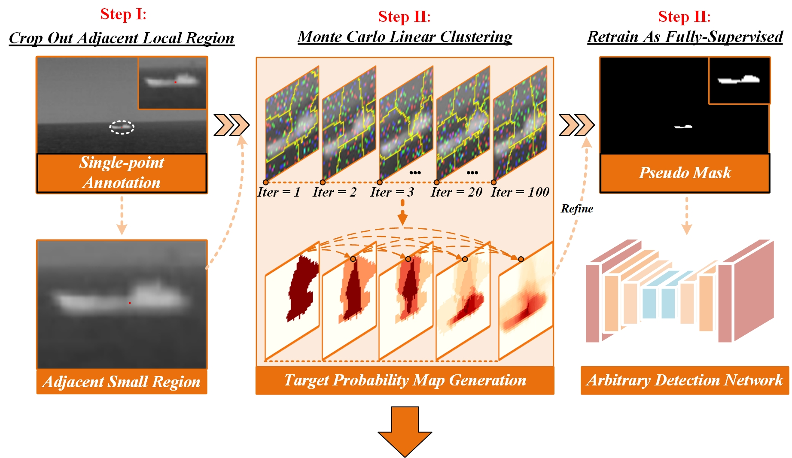
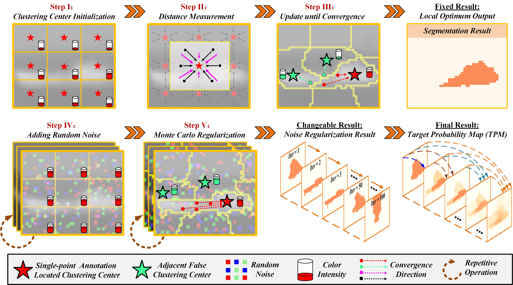
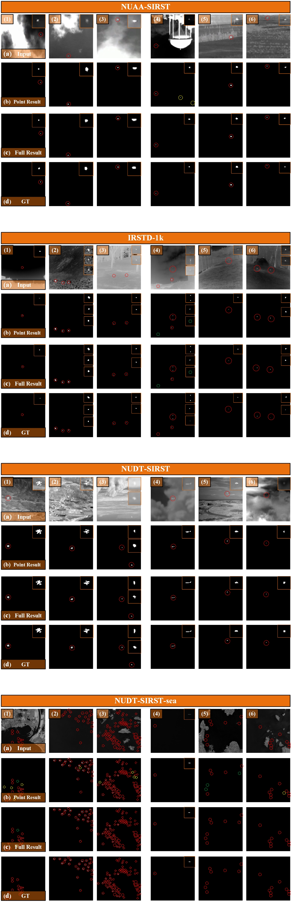
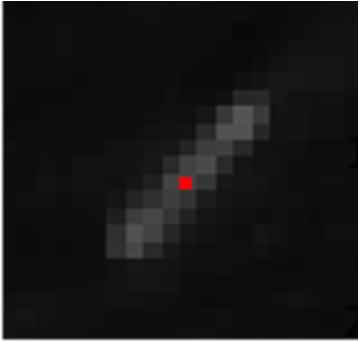
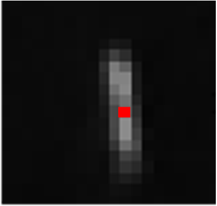
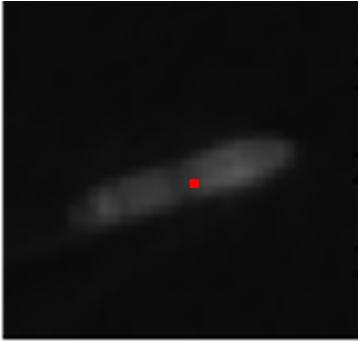
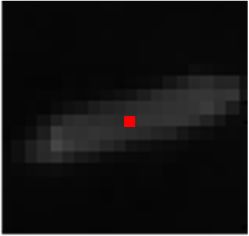
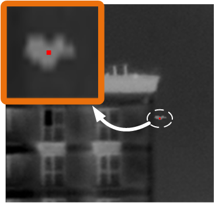
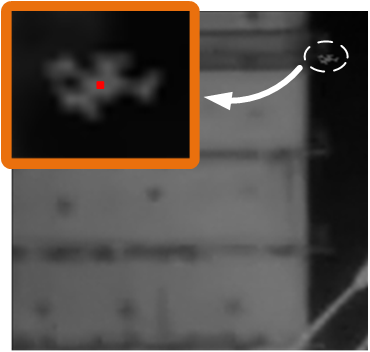
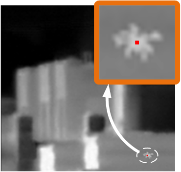

Monte Carlo Linear Clustering with Single-Point Supervision is Enough for Infrared Small Target Detection
Abstract
Single-frame infrared small target (SIRST) detection aims at separating small targets from clutter backgrounds on infrared images. Recently, deep learning based methods have achieved promising performance on SIRST detection, but at the cost of a large amount of training data with expensive pixel-level annotations. To reduce the annotation burden, we propose the first method to achieve SIRST detection with single-point supervision. The core idea of this work is to recover the per-pixel mask of each target from the given single point label by using clustering approaches, which looks simple but is indeed challenging since targets are always insalient and accompanied with background clutters. To handle this issue, we introduce randomness to the clustering process by adding noise to the input images, and then obtain much more reliable pseudo masks by averaging the clustered results. Thanks to this ``Monte Carlo'' clustering approach, our method can accurately recover pseudo masks and thus turn arbitrary fully supervised SIRST detection networks into weakly supervised ones with only single point annotation. Experiments on four datasets demonstrate that our method can be applied to existing SIRST detection networks to achieve comparable performance with their fully-supervised counterparts, which reveals that single-point supervision is strong enough for SIRST detection.
Pipeline of Single-point Supervised SIRST Detection
|  |
|---|
Illustration of MCLC
|  |
|---|
Quantitative Results
Table 1: IoU(10−2), Pd(10−2), and Fa(10−6) values achieved by different state-of-the-art methods on four benchmark datasets. For IoU and Pd, larger values indicate better performance. For Fa, smaller values indicate better performance. Unsup. refers to unsupervised methods. The best single-point supervised results are in red and the second best results are in blue.
 |
|---|
Qualitative Results
|  |
|---|
Fig. 4: Qualitative results achieved by different SIRST detection methods under (b) point-level supervision, (c) pixel-level supervision. For better visualization, the target area is enlarged in the right-top corner. The correctly detected target, false alarm, and miss detection areas are highlighted by red, yellow, and green dotted circles, respectively. Our MCLC can help to achieve comparable performance with sing-point annotation.
MCLC Process
Examples of target probability map and the corresponding refined pseudo masks during the MCLC process. Although easily producing inaccurate results at the beginning of clustering (e.g., iteration number less than 20), MCLC can gradually recover a reliable clustering result.
|  |  |  |  |
 |
|  |  |  |  |